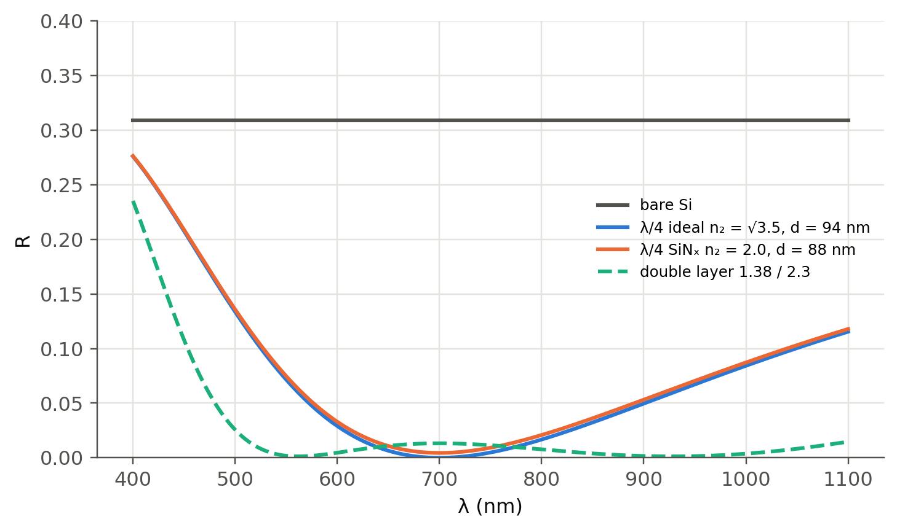
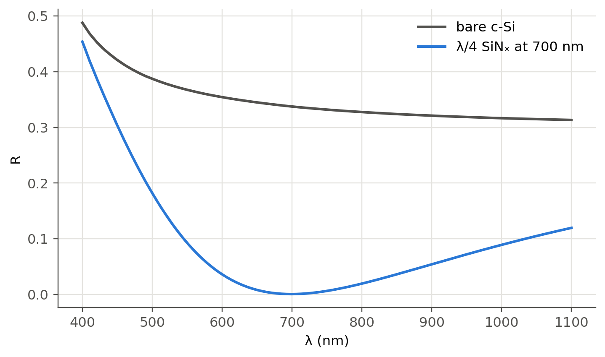
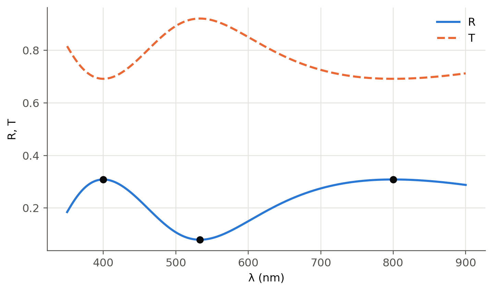

8 Antireflection coatings and thin-film optics
 Run this chapter’s code in Google Colab (no installation).
Run this chapter’s code in Google Colab (no installation).
Slides 148–154 (antireflection coating of a solar cell) and slides 267–276 (multiple-beam thin-film interference, minimum and maximum reflectance, transmission fringes of an a-Se film, incoherent multiple reflections in a plate).
8.1 Key relations
A film of index \(n_2\) and thickness \(d\) on a substrate \(n_3\) reflects a sum of partial waves (slides 267–269). At normal incidence, with the round-trip phase \(\phi=2\cdot\frac{2\pi}{\lambda}n_2d\):
\[ r=\frac{r_{12}+r_{23}e^{-j\phi}}{1+r_{12}r_{23}e^{-j\phi}},\qquad r_{ij}=\frac{n_i-n_j}{n_i+n_j}. \]
| result | formula | slide |
|---|---|---|
| AR condition (phase) | \(\phi=m\pi\), \(m\) odd \(\Rightarrow d=m\,\dfrac{\lambda}{4n_2}\) | 151–152, 270 |
| AR condition (amplitude) | \(n_2=\sqrt{n_1n_3}\) so that \(r_{12}=r_{23}\) | 153, 270 |
| extreme reflectances (\(n_1<n_2<n_3\)) | \(R_\text{min}=\left(\dfrac{n_1n_3-n_2^2}{n_1n_3+n_2^2}\right)^2\) at \(\phi=\) odd \(\pi\); \(\ R_\text{max}=\left(\dfrac{n_3-n_1}{n_3+n_1}\right)^2\) at \(\phi=\) even \(\pi\) | 272 |
| incoherent plate | \(T_\text{plate}=(1-R)^2(1+R^2+R^4+\dots)=\dfrac{1-R}{1+R}\) | 276 |
If \(n_1<n_3<n_2\) the expressions for \(R_\text{min}\) and \(R_\text{max}\) are interchanged (slide 272).
8.1.1 Thin-film designer, live
With the defaults (Si\(_3\)N\(_4\) on silicon, \(d=92\) nm) you get the solar-cell example below.
8.2 Worked example: antireflection coating on a silicon solar cell (slides 148–154)
Show the Python
R_si = ((1 - 3.5)/(1 + 3.5))**2
print(f"bare Si (n = 3.5): R = {R_si:.1%} → about 30 % of the light is lost (slide 149)")
print(f"ideal coating index √(1·3.5) = {np.sqrt(3.5):.2f} (Si3N4, n ≈ 1.9, is a good choice)")
print(f"quarter-wave thickness at 700 nm: d = λ/(4 n2) = {700/(4*1.9):.1f} nm (or odd multiples)")bare Si (n = 3.5): R = 30.9% → about 30 % of the light is lost (slide 149)
ideal coating index √(1·3.5) = 1.87 (Si3N4, n ≈ 1.9, is a good choice)
quarter-wave thickness at 700 nm: d = λ/(4 n2) = 92.1 nm (or odd multiples)A single quarter-wave layer is perfect only at one wavelength and only if \(n_2=\sqrt{n_1n_3}\) (slide 154). SiNₓ (\(n\approx2.0\)) is the industrial compromise. A dispersion-free \(n_\text{Si}=3.5\) is assumed here for clarity.
Show the Python
lam = np.linspace(nm(400), nm(1100), 700); l0, nSi = nm(700), 3.5
fig, ax = plt.subplots()
ax.plot(lam*1e9, ol.tmm([1, nSi], [], lam)[0], color=ol.INK2, label="bare Si")
for n2, lbl in ((np.sqrt(nSi), "ideal n₂ = √3.5"), (2.0, "SiNₓ n₂ = 2.0")):
ax.plot(lam*1e9, ol.tmm([1, n2, nSi], [l0/(4*n2)], lam)[0], label=f"λ/4 {lbl}, d = {l0/(4*n2)*1e9:.0f} nm")
ax.plot(lam*1e9, ol.tmm([1, 1.38, 2.3, nSi], [l0/(4*1.38), l0/(4*2.3)], lam)[0], "--", label="double layer 1.38 / 2.3")
ax.set(xlabel="λ (nm)", ylabel="R", ylim=(0, 0.4)); ax.legend(fontsize=8); plt.show()
Show the Python
try:
from refractiveindex import RefractiveIndexMaterial
Si = RefractiveIndexMaterial(shelf="main", book="Si", page="Green-2008")
lam_nm = np.linspace(400, 1100, 200)
N_Si = np.array([Si.get_refractive_index(l) - 1j*Si.get_extinction_coefficient(l) for l in lam_nm]).squeeze()
R = [ol.tmm([1, 2.0, Ni], [nm(700)/(4*2.0)], nm(l))[0][0] for Ni, l in zip(N_Si, lam_nm)]
Rb = [ol.tmm([1, Ni], [], nm(l))[0][0] for Ni, l in zip(N_Si, lam_nm)]
plt.plot(lam_nm, Rb, color=ol.INK2, label="bare c-Si"); plt.plot(lam_nm, R, label="λ/4 SiNₓ at 700 nm")
plt.xlabel("λ (nm)"); plt.ylabel("R"); plt.legend(); plt.show()
except Exception as err:
print("refractiveindex package or database not available here:", type(err).__name__)
8.3 Worked example: a dielectric film on a semiconductor (slides 273–275)
A semiconductor (\(n_3=3.5\)) is coated with a 160 nm transparent film (\(n_2=2.5\)) in air. Find the minimum and maximum reflectances and transmittances and their wavelengths in the visible.
Show the Python
n1, n2, n3, d = 1.0, 2.5, 3.5, 160e-9
Rmin = ((n1*n3 - n2**2)/(n1*n3 + n2**2))**2
Rmax = ((n3 - n1)/(n3 + n1))**2
print(f"R_min = {Rmin:.3f} → T_max = {1-Rmin:.0%}; R_max = {Rmax:.3f} → T_min = {1-Rmax:.0%}")
for m in (1, 3):
print(f"R_min (φ = {m}π) at λ = 4 n2 d / {m} = {4*n2*d/m*1e9:.0f} nm")
for m in (1, 2, 3):
print(f"R_max (φ = {2*m}π) at λ = 2 n2 d / {m} = {2*n2*d/m*1e9:.0f} nm")
lam = np.linspace(nm(350), nm(900), 1500)
R = ol.tmm([n1, n2, n3], [d], lam)[0]
fig, ax = plt.subplots(); ax.plot(lam*1e9, R, label="R"); ax.plot(lam*1e9, 1 - R, "--", label="T")
for l in (533.3e-9, 800e-9, 400e-9):
ax.plot(l*1e9, ol.tmm([n1, n2, n3], [d], l)[0][0], "o", color=ol.INK)
ax.set(xlabel="λ (nm)", ylabel="R, T"); ax.legend(); plt.show()R_min = 0.080 → T_max = 92%; R_max = 0.309 → T_min = 69%
R_min (φ = 1π) at λ = 4 n2 d / 1 = 1600 nm
R_min (φ = 3π) at λ = 4 n2 d / 3 = 533 nm
R_max (φ = 2π) at λ = 2 n2 d / 1 = 800 nm
R_max (φ = 4π) at λ = 2 n2 d / 2 = 400 nm
R_max (φ = 6π) at λ = 2 n2 d / 3 = 267 nm
In the visible, \(R_\text{min}\) (8 %) occurs at 533 nm and \(R_\text{max}\) (31 %) at 400 nm, which gives \(T_\text{max}=92\,\%\) and \(T_\text{min}=69\,\%\) as on slide 275.
8.4 Coherent and incoherent reflections (slides 274, 276)
A thin film gives interference fringes (slide 274: transmission of an a-Se film on glass). A thick plate does not, because the source’s coherence length (Chapter 9) is shorter than the round trip. Then intensities, not amplitudes, add:
Show the Python
Rg = ((1.5 - 1)/(1.5 + 1))**2
print(f"glass plate, incoherent multiple reflections: T = (1−R)/(1+R) = {(1-Rg)/(1+Rg):.4f} "
f"(single surface 1−R = {1-Rg:.4f}, two surfaces without multiple reflections (1−R)² = {(1-Rg)**2:.4f})")glass plate, incoherent multiple reflections: T = (1−R)/(1+R) = 0.9231 (single surface 1−R = 0.9600, two surfaces without multiple reflections (1−R)² = 0.9216)
TipGoing deeper
- The double-layer design above is illustrative. Optimise both thicknesses to minimise the solar-spectrum-weighted reflectance (AM1.5G spectrum,
scipy.optimize). What is gained versus texturing the surface? - Graded-index and moth-eye surfaces: why does a gradual index transition suppress reflection? Relate it to the limit of many thin layers.
- Swanepoel’s method (slide 274) extracts \(n(\lambda)\) and thickness of a film from the envelopes of its transmission fringes. Implement it on a simulated spectrum from
ol.tmm. - Facet coatings of semiconductor lasers and SOAs: AR (below \(10^{-4}\)) for amplifiers, HR for lasers. Estimate the tolerance on thickness for a single-layer AR at 1550 nm.
NoteComplements
- Macleod, Thin-Film Optical Filters: design of AR, HR and band-pass coatings.
- R. Swanepoel, “Determination of the thickness and optical constants of amorphous silicon”, J. Phys. E 16, 1214 (1983).
- M. A. Green, Solar Cells: Operating Principles, Technology and System Applications.
8.5 Try it yourself
- Use the live panel to design a single-layer AR for a glass lens (\(n_3=1.52\)) at 550 nm. Why is MgF₂ (\(n=1.38\)) used even though it is not the ideal index?
- Why do soap bubbles show colours, and why does a soap film turn black just before it bursts?
- Find the thinnest film that makes a silicon surface look blue (minimum reflection in the red, maximum in the blue).